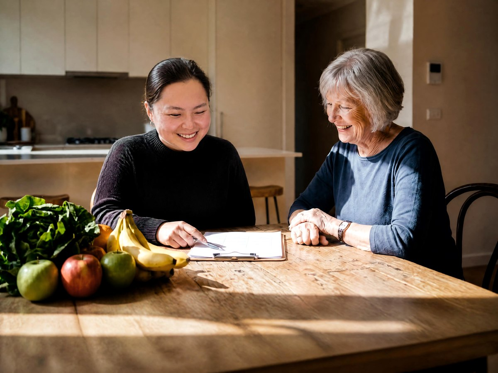

Our Allied Health & Nursing Services
Five specialist disciplines, one coordinated team — delivered at home, in the community, or via telehealth across Melbourne.
Dietetics for complex health & everyday wellbeing
Our Accredited Practising Dietitians work with NDIS participants and Support at Home clients to manage nutrition-related health conditions, swallowing difficulties, enteral (tube) feeding, weight management, and food-related behaviours — with plans built around real routines, not generic diet sheets.
- Malnutrition & unplanned weight change
- Texture-modified diets & dysphagia-safe meal planning
- Enteral (PEG/NG) tube feeding management
- Chronic disease nutrition (diabetes, renal, cardiac)
- Mealtime support planning for carers & support workers

Communication & swallowing support, for every age and ability
Our Speech Pathologists support participants with communication difficulties, social skills development, augmentative and alternative communication (AAC), and dysphagia (swallowing) assessment and management — working closely with families and support teams.
- Speech, language & communication assessment
- Augmentative & Alternative Communication (AAC)
- Dysphagia (swallowing) assessment & management
- Social communication & group programs
- Training for families, carers & support workers

Movement, strength & independence
Our Accredited Exercise Physiologists design and deliver tailored, evidence-based exercise programs to improve strength, balance, mobility and cardiovascular health — helping clients build independence and reduce fall and injury risk at home and in the community.
- Individualised exercise programs & goal setting
- Falls prevention & balance training
- Chronic condition management (cardiac, diabetes, respiratory)
- Mobility, strength & functional capacity building
- In-home, community & telehealth sessions
Clinical nursing care, delivered at home
Our Registered Nurses provide clinical nursing support for NDIS participants and Support at Home clients with complex health needs — helping you manage your health safely and confidently in your own home.
- Wound care & dressings
- Medication management & administration
- Continence care & catheter management
- Complex health condition monitoring
- Training & delegation for support workers
Building independence in everyday life
Our Occupational Therapists help NDIS participants and Support at Home clients build the skills, equipment and home environment they need to live safely and independently, whatever their goals.
- Functional capacity assessments
- Home modifications & safety assessments
- Assistive technology & equipment prescription
- Daily living skills & sensory support
- NDIS report writing & goal planning
Nutrition audits for meal delivery providers
Our Accredited Practising Dietitians work with meal delivery companies to independently review menus and processes against nutrition, food safety and disability/aged care standards — giving your business and your customers confidence in every meal.
- Menu & recipe nutritional analysis
- Texture-modified & dysphagia-safe meal compliance
- Allergen labelling & food safety documentation review
- Alignment with NDIS, aged care & food standards
- Written audit report with practical recommendations
How our service works, step by step
1. Referral
You, a family member, or a professional submits a referral online or by phone.
2. Welcome Call
Our team confirms funding, availability and matches you with the right clinician.
3. Initial Assessment
Your clinician meets you at home, in the community, or via telehealth to understand your goals.
4. Ongoing Support
Regular sessions, clear reporting, and progress reviewed against your goals.
Not sure which service is right?
Get in touch and our team will help you find the right support, or refer a client directly.